| Variable | Data Type | Definition |
|---|---|---|
| PersonAge | int64 | Age of the borrower |
| PersonIncome | int64 | Income of the borrower |
| PersonHomeOwnership | object | Home ownership of the borrower |
| PersonEmpLength | float64 | Employment length of the borrower |
| LoanIntent | object | Intention of the loan |
| LoanGrade | int64 | Loan grade |
| LoanAmnt | int64 | Amount of the loan (USD) |
| LoanIntRate | float64 | Loan interest rate |
| LoanStatus | int64 | Loan status (0 - not defaulted, 1 - defaulted) |
| LoanPercentIncome | float64 | Loan percentage of income |
| PreviousDefault | object | If the borrower has defaulted before |
| CredHistory | int64 | Credit history length |
Predicting Loan Defaults: A Data-Driven Approach to Credit Risk Analysis
BEE2041 Data Science in Economics – Empirical Project
1. Introduction
Access to credit is a important driver of economic growth, allowing households or businesses to invest, expand and smooth consumption. However, credit risk remains a fundamental challenge for financial institutions, as loan defaulting can lead to substantial financial losses for both the company and stakeholders. The ability to predict these defaults is vital for lending institutions to mitigate their risk and make more informed lending predictions. Recent advancements in machine learning (ML) have aided in the development of robust predictive models that outperform traditional credit-scoring methods (Yang, 2024)
Ensemble methods such as Random Forest (RF), and Extreme Gradient Boosting (XGBoost), have shown significant promise in improving classification accuracy over traditional statistical methods (Yadav, 2025). These models offer enhanced predictive capacity due to their ability to capture non-linear relationships in borrower data, providing financial institutions with more reliable risk assessment (Roy, 2025).
This project aims to explore a data-driven approach to credit risk analysis by using ML methods to predict loan defaulting. Logistic regression (LR), RF, and XGBoost have all been implemented and compared using standard performance metrics such as accuracy, precision, recall, F1-score and area under the curve (AUC). Moreover, exploratory data analysis will be conducted to examine the distribution of important financial variables, identify correlations and allow for optimised feature selection to improve model performance.
Due to the increasing reliance on alternative data sources and advanced computational methods in the financial sector, the results of this project may have significant practical implications. Improved credit risk analysis can help lenders reduce default rates, minimise losses and promote more inclusive access to credit (Ellsworth, 2025). By leveraging the latest ML methods, this project aims to contribute to the growing body of research on predictive analytics in finance and support more robust lending practices.
2. Data
Prior to conducting the analysis of credit risk, we need to understand and organise the data. For this analysis we will be using a loan defaulting dataset from Kaggle (reference), consisting of 12 variables/columns and 32580 observations, illustrated in Table 1.
2.1 Preparing the Data
| Variable | Missing Values |
|---|---|
| PersonAge | 0 |
| PersonIncome | 0 |
| PersonHomeOwnership | 0 |
| PersonEmpLength | 887 |
| LoanIntent | 0 |
| LoanGrade | 0 |
| LoanAmnt | 0 |
| LoanIntRate | 3095 |
| LoanStatus | 0 |
| LoanPercentIncome | 0 |
| PreviousDefault | 0 |
| CredHistory | 0 |
Table 2 displays the missing values within the dataset for each variable. The only variables with missing data are PersonEmpLength and LoaanIntRate, containing 887 and 3095 observations with no values, respectively. Missing data can have a large impact on data analysis if not handled properly and can lead to skewed or incorrect conclusions, making handling this data in the correct way crucial. Due to the positively skewed nature of PersonEmpLength, illustrated in Figure 1, median imputation was deployed in order to maintain the observations and not impact sample size. LoanIntRate saw a high correlation with LoanGrade, shown by Figure 5, therefore regression imputation was used to fill these missing variables and not lose sample size. Also, any duplicate observations were removed to mitigate their impact on the models, this reduced the sample size to 32415 observations.
2.2 Descriptive Statistics
| Variable | N | Mean | Median | SD | Min | Max |
|---|---|---|---|---|---|---|
| PersonAge | 32415.0 | 27.7 | 26.0 | 6.3 | 20.0 | 144.0 |
| PersonIncome | 32415.0 | 65908.6 | 55000.0 | 52533.0 | 4000.0 | 2039784.0 |
| PersonEmpLength | 32415.0 | 4.8 | 4.0 | 4.1 | 0.0 | 123.0 |
| LoanGrade | 32415.0 | 1.2 | 1.0 | 1.2 | 0.0 | 6.0 |
| LoanAmnt | 32415.0 | 9594.0 | 8000.0 | 6322.8 | 500.0 | 35000.0 |
| LoanIntRate | 32415.0 | 11.0 | 11.0 | 3.2 | 5.4 | 23.4 |
| LoanStatus | 32415.0 | 0.2 | 0.0 | 0.4 | 0.0 | 1.0 |
| LoanPercentIncome | 32415.0 | 0.2 | 0.2 | 0.1 | 0.0 | 0.8 |
| CredHistory | 32415.0 | 5.8 | 4.0 | 4.1 | 2.0 | 30.0 |
Table 3 contains the summary statistics for all variables within the dataset. PersonAge and PersonEmpLength show maximum values of 144 and 123 years respectively, which are both above the oldest age a person has lived (122 years), meaning that they are potential errors. To remove these errors from the dataset, both observations where PersonEmpLength was 123 were removed as to not impact the models. For PersonAge, all observations with ages above 144 years were removed. This left PersonAge with a maximum value of 94 and PersonEmpLength with a maximum value of 41, which both are reasonable.
2.3 Distribution Analysis
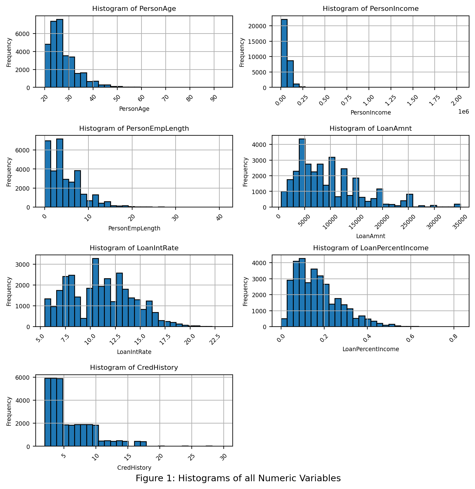
The histograms shown in Figure 1 illustrate the distributions for each numeric variable. All of the variables shown have positivley skewed distributions. This is due to individuals with low age likely to have low values in each of these variables. PersonAge, PersonEmpLength and CredLength have very similar distributions, indicating potential correlation between these variables.
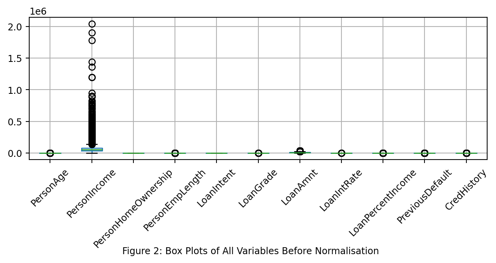
Figure 2 shows that the data isn’t scaled proportionally, therefore we need to apply a scaling technique. Due to the skewness of all the variables quantile transformation was deployed, normalised data is shown in Figure 3. The plot shows outliers, however there is no reason for these to be errors meaning they will not be removed. For example, the reason for outliers in PersonIncome is due to people earning considerably more than average.
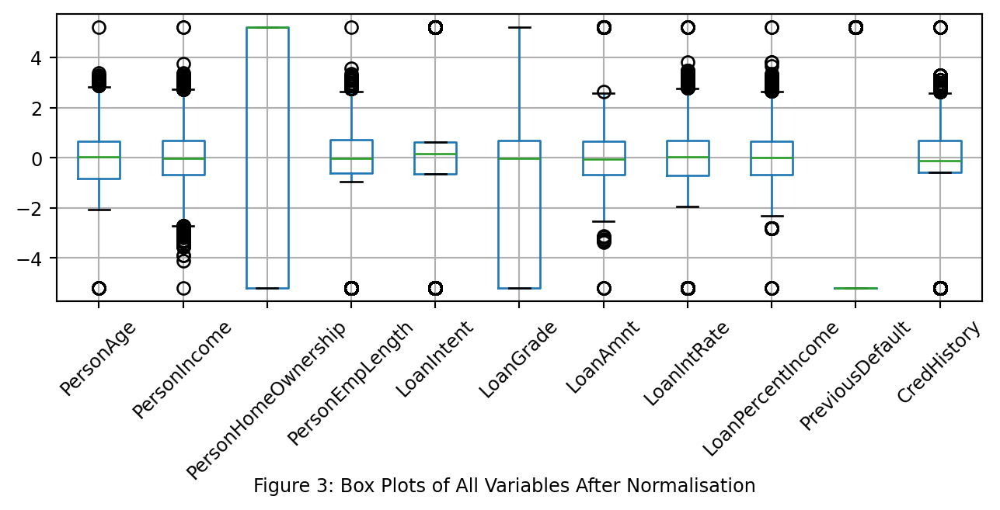
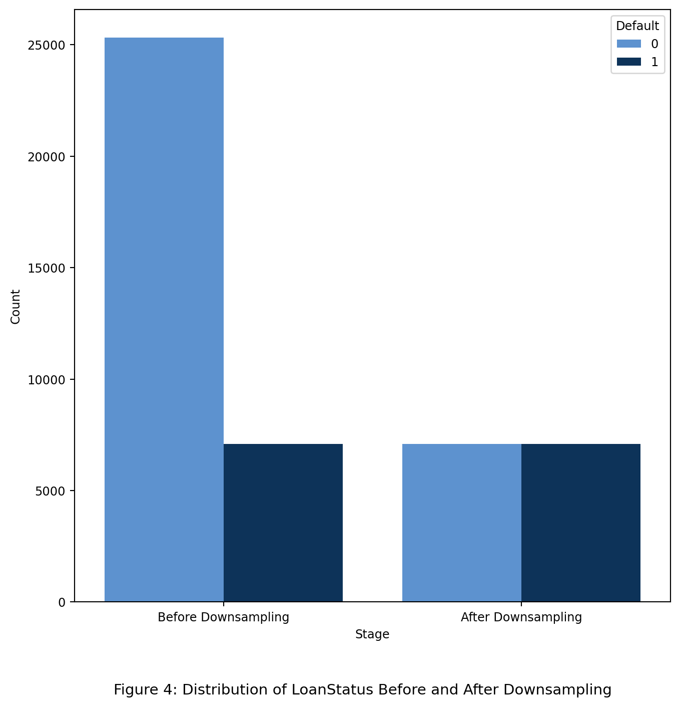
Figure 4 demonstrates the the distribution of LoanStatus within the dataset. Before downsampling there was a large discrepancy between the number of people who defaulted and who didn’t. This can cause large impacts on the ML models deployed in the analysis, leading to skewed perforamnce metrics as the models will predict the majority class with high accuracy but the minority class with lower accuracy. To circumvent this issue, downsampling was performed to ensure both outcomes had the same number of observations, shown in Figure 4
2.4 Correlation Analysis
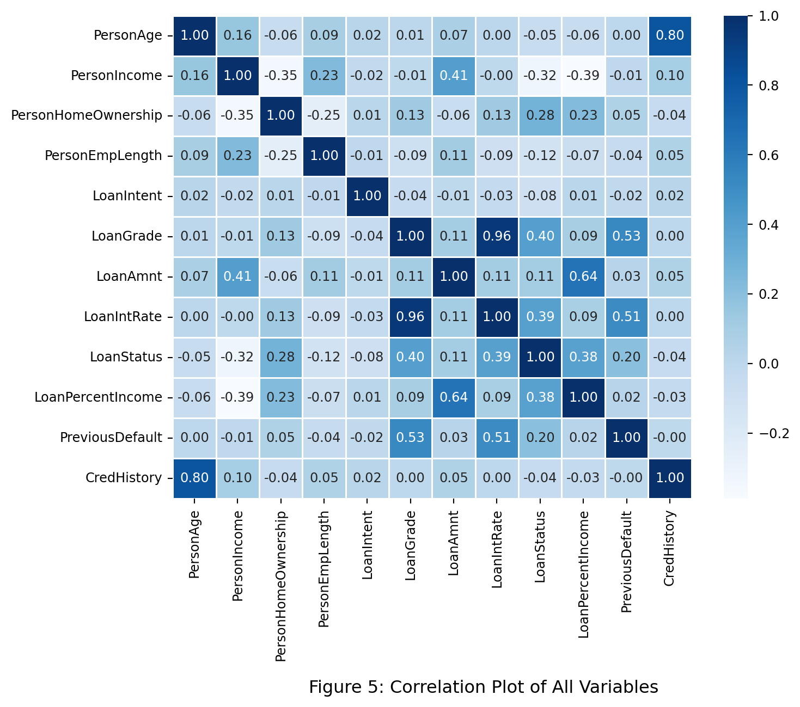
Figure 5 shows a correlation plot quantifying the relationships between the variables and to the target LoanStatus. LoanGrade and LoanIntRate have a high correlation coefficient (0.96), indicating that they are highly correlated. Also, a similar relationship is shown between PersonAge and CredHistory (r = 0.8). Both these relationships make logical sense as someone who is older who have a longer credit history and as loan grade increases it is likley that the interest rate does as well. Due to the mullticolliearity in the data, these variables may have to be removed however, futher analysis with variance inflation factor (VIF) is required.
| Feature | VIF |
|---|---|
| PersonAge | 1.501 |
| PersonIncome | 9.368 |
| PersonHomeOwnership | 1.199 |
| PersonEmpLength | 1.064 |
| LoanIntent | 1.002 |
| LoanGrade | 2.972 |
| LoanAmnt | 12.519 |
| LoanIntRate | 3.09 |
| LoanPercentIncome | 12.02 |
| PreviousDefault | 1.251 |
| CredHistory | 1.469 |
VIF values for all the variables are shown within Table 4. In contrast to Figure 5, LoanGrade, LoanIntRate, PersonAge, CredHistory have low VIF values, indicating low levels of multicollinearity. However, LoanAmnt and LoanPercentIncome have VIF values greater than 10 which shows multicollinearity and actions need to be taken to ensure they don’t affect the models. For the logistic regression, L1 and L2 regularisation was deployed to reduce the affects of multicollinearity. Other models are tree based and handle multicollinearity well, therefore no futher processing is needed.
Within this analysis, LR, RF, XGboost models will be trained to predict LoanStatus using PersonAge, PersonIncome, PersonHomeOwnership, PersonEmpLength, LoanIntent, LoanGrade, LoanAmnt, LoanIntRate, LoanPercentIncome, PreviousDefault and CredHistory.
2.5 Causal Analysis
This section explores the heterogeneous impact of previous loan default on the likelihood of defaulting again, using a causal forest framework. By estimating Conditional Average Treatment Effects (CATEs), we can uncover how the effect of prior default varies across individual borrower profiles
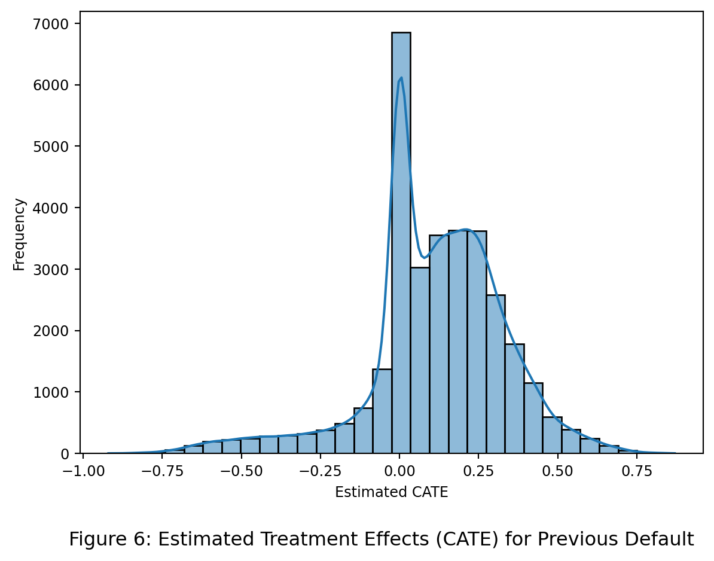
Figure 6 shows estimated CATEs, revealing a negativley-skewed distribution with most values centered near zero. This suggests that, for the majority of borrowers, previous default status has a limited marginal effect on the likelihood of defaulting again. However, a notable subgroup exhibits significantly positive CATEs, indicating elevated risk. These individuals may represent vulnerable borrower profiles for whom previous financial distress is a strong predictor of future default. The long right tail highlights the importance of heterogeneity in treatment effects and supports the use of a causal forest over average-effect models.
3. Machine Learning Analysis
3.1 Logistic Regression
The first model deployed was an LR trained on all the standard variables, this model acts as a baseline to compare all more complex models with.
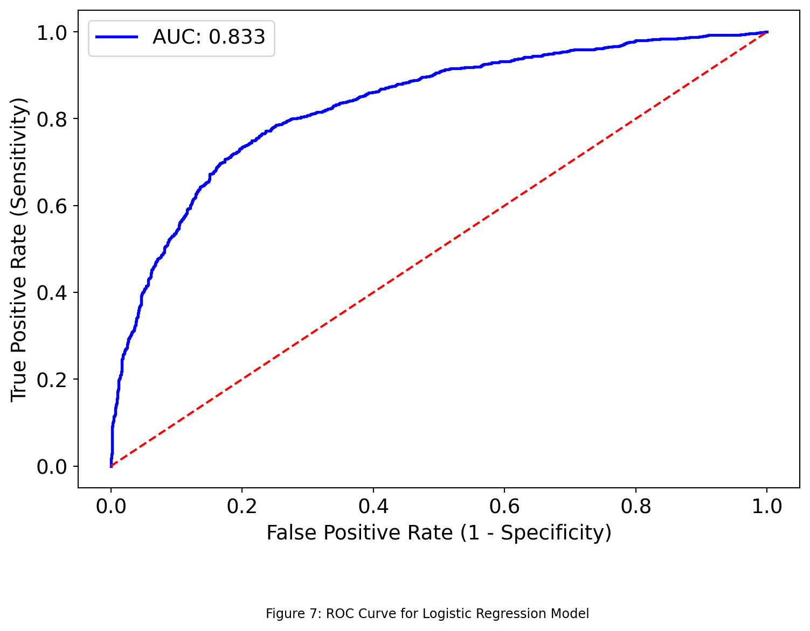
Figure 7 shows the ROC curve for the LR model, an indication of the trade-off between sensitivity and specificity of the model. The model achieved a AUC score of 0.833 which is considered considerable (Çorbacıoğlu, 2023), indicating solid predictive performance when distinguishing between positive outcomes. The model’s curve lies well above the diagonal reference line (AUC = 0.5), which represents random classification, demonstrating its predictive applications. However, the graph shows room for improvement due to true positive rate (TPR) remaining below 0.9.
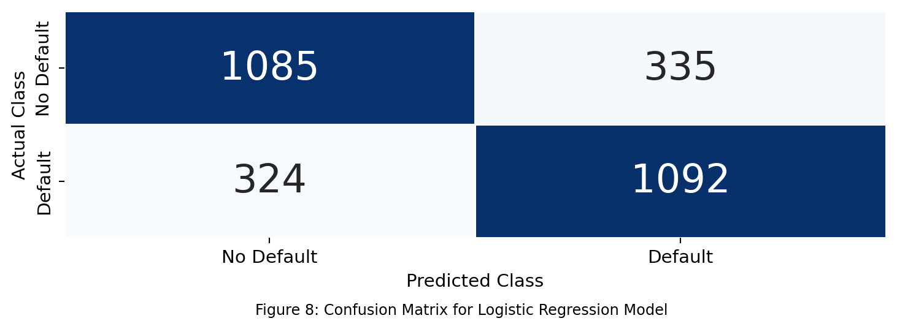
Figure 8 visualises the error within the classification model. The matrix reveals that the model correctly identified 1085 non-default cases (true negatives) and 1092 default cases (true positives), demonstrating its ability to capture both classes effectively. However, 335 non-default cases were misclassified as defaults (false positives), while 324 default cases were incorrectly predicted as non-defaults (false negatives), potentially leading to losses in revenue for a financial institution.
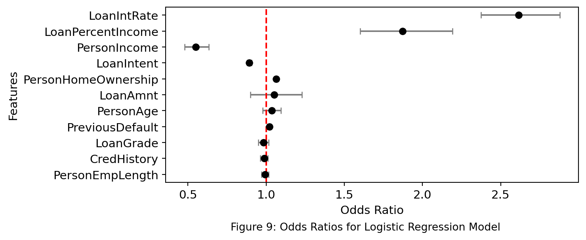
Figure 9 shows the odds ratios for the LR model. Odds ratios were calculated allowing an easy interpretation of the relationships between the individual features and credit risk. The odds ratio indicate the increase in the risk of defaulting for a one-unit increase in that variable. The results indicate that LoanIntRate and LoanPercentIncome have the strongest positive associations with default, with odds ratios of 2.574 and 1.97 , respectively. This suggests that as interest rates or the proportion of income allocated to the loan increase, the likelihood of default rises significantly. Conversely, PersonIncome has an odds ratio of 0.574, implying that higher income levels reduce the probability of default, aligning with expectations in traditional credit risk assessment.
3.2 Random Forest
The second model that was developed and compared with the LR model was an RF as they have been shown to have superior performance than LR models (Couronné et al., 2018). This model was trained on all the standard variables.
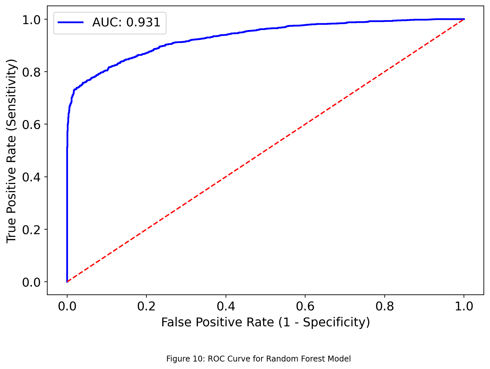
The ROC curve, illustrated in Figure 10 for the RF model showcases its improved classification ability in distinguishing between defaulting and non-defaulting cases and can be compared to LRs. The model achieved a excellent AUC of 0.931 (Çorbacıoğlu, 2023), indicating strong predictive capability and shows that more complex models have the potential to improve credit risk prediction, however this highly accurate performance may indicate overfitting.
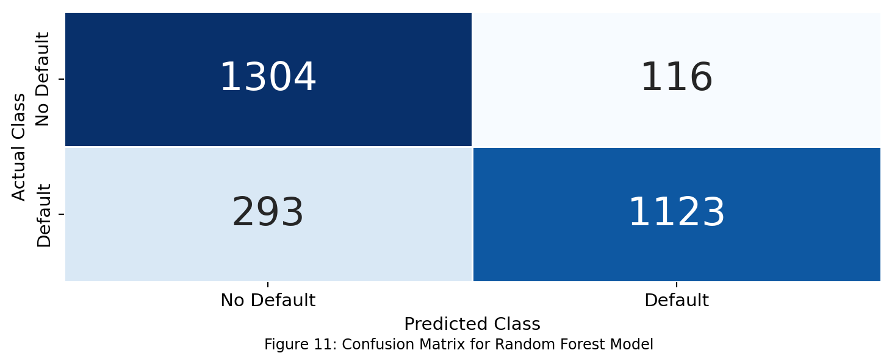
The confusion matrix (Figure 11) for the RF model provides a detailed comparison of actual versus predicted default status. In this case, the model correctly predicted non-default for 1304 instances (True Negatives), and correctly identified defaulting for 1123 instances (True Positives). However, there were 116 false positives, where the model incorrectly predicted defaulting when the actual class was non-default, and 293 false negatives. This confusion matrix reiterates the improved performance from the LR as the incorret classification instances have decreased.
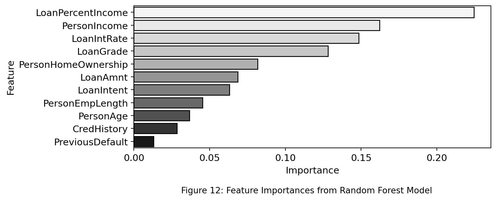
Figure 12 demonstrates the most influential features when predicting credit risk by visualising feature importance calculated using mean decrease in accuracy. LoanIntRate is the most important feature suggesting that the proportion of income allocated to a loan has the strongest impact on the model’s predictions, supporting the conclusions from the LR which ranked it second. LoanPercentIncome and PersonIncome are also shown to be within the top 3 most important features as they are in the LR model. Contrastly, to the LR, the RF shows LoanGrade to have high importance whereas Figure 8 shows it to have very little impact on credit risk for the LR model, potentially attributed to the differences in model architecture.
3.3 XGBoost
The third model that I deployed to improve upon the RF model was an XGBoost as they have been shown to reduce potential overfitting and have higher performance and speed than RFs (GeeksforGeeks, 2024).
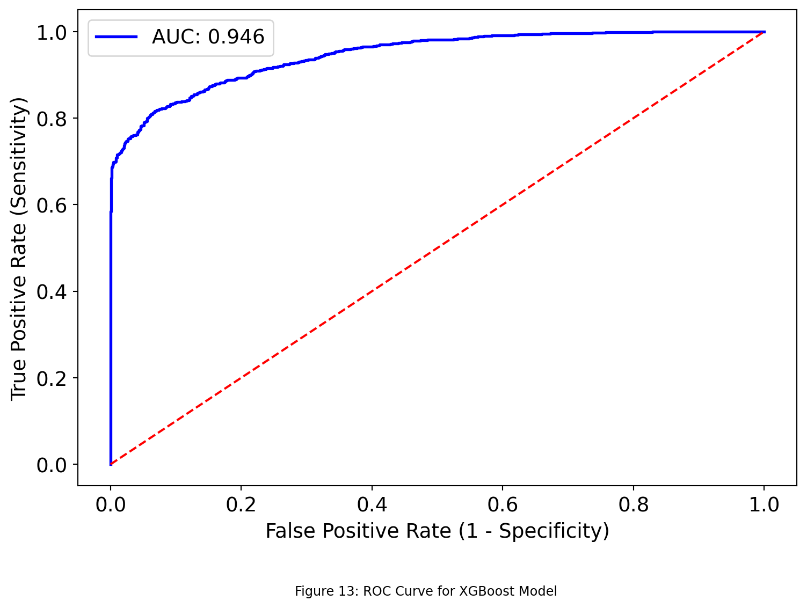
Figure 13 visualises the performance of the XGBoost in classifying positive outcomes. This model achieves a slightly higher AUC score when compared to the RF (AUC = 0.946), demonstrating excellent predictive performance (Çorbacıoğlu, 2023). Despite the higher AUC score this model is performance is less likely to be attributed to potential overfitting due to built in regularisation parameters; max_depth and min_child_weight along with L1 + L2 regularisation.
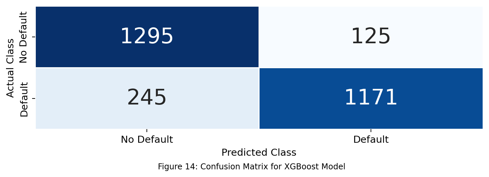
Figure 14 reiterates the increased performance of the XGBoost when compared to the RF model. The XGBoost predicts 48 more true positives than the RF model did, indicating better sensitivity which is useful for a lending insitution as this allows them to not give credit to these individuals, avoiding potentially revenue losses. Although the difference is small, defaulting can have large financial losses. The model also has 9 fewer false positives, meaning it incorrectly predicts fewer non-defaulters as defaulters. this figure shows that the XGBoost model demonstrates a balanced improvement, capturing more true positives while keeping false positives low, making it a stronger candidate for credit risk assessment.
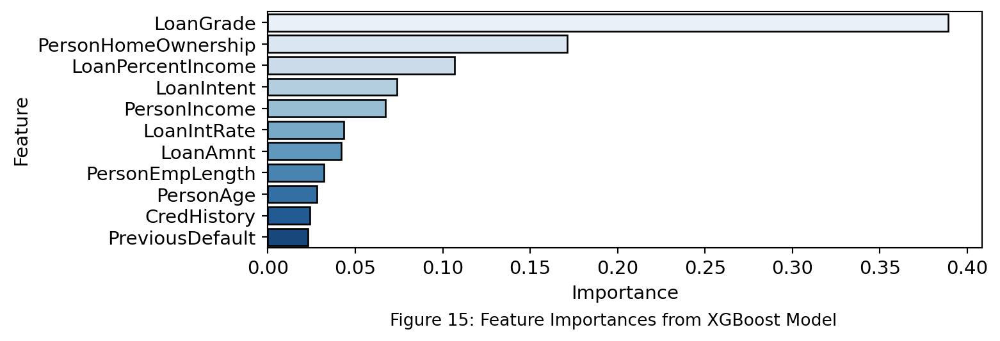
Figure 15 contradicts the other models (LR and RF), as these models predicted LoanIntRate to have less of an impact on the preditions than the XGBoost model. However, similar to the RF and LR model, the XGBoost placed high importance on LoanPercentIncome reinforcing the notion that the proportion of income allocated to a loan significantly impacts the risk of defaulting. However, PersonIncome ranks higher than in the RF and LR, indicating that home ownership status may play a larger role in how XGBoosts evaluates credit risk.
3.4 Model Evaluation and Comparisons
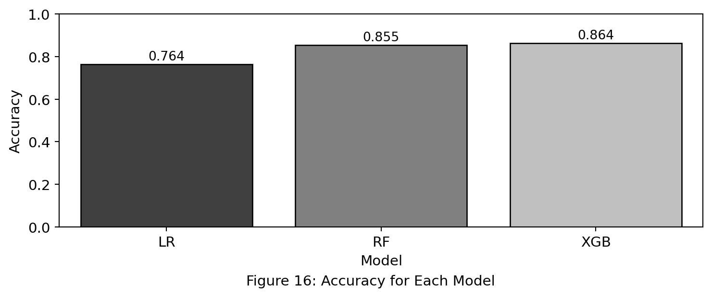
| Model | Accuracy | Precision | Sensitivity | F1 Score | AUC | Log Loss | Brier Score |
|---|---|---|---|---|---|---|---|
| LR | 0.768 | 0.765 | 0.771 | 0.768 | 0.833 | 8.375 | 0.232 |
| RF | 0.856 | 0.906 | 0.793 | 0.846 | 0.931 | 5.198 | 0.144 |
| XGB | 0.87 | 0.904 | 0.827 | 0.864 | 0.946 | 4.702 | 0.13 |
Figure 16 compares model accuracy, showing that XGBoost (0.87) performs best, followed closely by the RF (0.856), while LR lags behind at 0.768. This highlights the superior performance of ensemble models over LR in classification tasks.
Table 5 provides a more detailed breakdown, confirming XGBoost as the strongest model, with the highest AUC (0.946), recall (0.827), and F1 score (0.864). RF (AUC = 0.931, F1 = 0.846) follow closely, both offering strong predictive performance. LR underperforms across all metrics, with the lowest AUC (0.833) and the highest log loss (8.375), indicating weaker reliability.
The lower log loss and Brier scores for XGBoost reflect better probability calibration, while LR’s higher values suggest less confidence in predictions. Overall, XGBoost provide the best balance of accuracy, precision, and reliability, making them the most effective model in credit risk analysis.
Table 6 summarises the key predictors of default for each model. LR relies on PersonIncome, LoanPercentIncome, and LoanIntRate, suggesting a linear relationship between income, loan percentage, and default risk. RF prioritises LoanPercentIncome and PersonIncome, indicating the importance of relative loan burden, while also recognising LoanIntRate. XGBoost identifies LoanGrade as the most influential feature, followed by PersonHomeOwnership and LoanPercentIncome, reflecting a broader assessment of creditworthiness. The differences suggest that tree-based models (RF, XGBoost) capture non-linear relationships better than LR, which is constrained to linear associations.
3.5 Practical Implications and Limiations
The findings demonstrate the effectiveness of ensemble learning models, particularly XGBoost and RF, in improving credit risk assessment. These models outperform traditional approaches by capturing complex patterns in financial data and handling imbalanced datasets more effectively (Chopra & Bhilare, 2018). By focusing on key predictors such as LoanGrade, LoanPercentIncome, and PersonIncome, lenders can refine their risk assessment frameworks, improving accuracy while minimising misclassification errors. This enables better-informed lending decisions, reducing default rates and enhancing overall portfolio performance.
Despite their advantages, ensemble models present several challenges. Their complexity reduces interpretability, which is a key consideration in regulated industries where transparency is required (Afolabi, 2024). Ensemble models also require higher computational resources, increasing costs and making them less accessible to smaller institutions (Lei, 2025). Furthermore, ensemble methods are prone to overfitting when applied to imbalanced datasets, limiting their generalisability without proper tuning (Cheng et al., 2021). Another concern is the potential amplification of biases present in training data, which could lead to ethical issues in credit decision-making (Shah & Davis, 2025). Addressing these limitations requires further research into explainable AI, optimised model tuning, and bias mitigation strategies to ensure fair and reliable predictions.
4. Conclusion
This project compared the effectiveness of LR, RF, and XGB in predicting loan defaults, with results showing that ensemble models significantly outperform traditional approaches. XGB achieved the highest accuracy (0.87) and AUC (0.946), demonstrating its ability to capture complex patterns in financial data. RF also performed well, but its slightly lower recall suggests it may miss some defaulters, leading to financial losses. In contrast, LR lagged behind due to its reliance on linear relationships, making it less suited for this type of predictive task.
Feature importance analysis revealed key differences in how these models assess risk. LR prioritised income-based factors, whereas RF and XGB incorporated broader indicators such as LoanGrade and PersonHomeOwnership. This suggests that ensemble methods offer a more nuanced and holistic approach to credit risk assessment, moving beyond simple financial metrics.
Despite their strengths, XGB and RF come with limitations. Their complexity makes them harder to interpret, which could be a barrier in regulated financial environments. They also require careful tuning to avoid overfitting, meaning their performance depends heavily on parameter selection. Future work should focus on improving explainability, reducing bias in training data, and optimising hyperparameters to further refine predictive performance.
Link to Github Repository = BEE2041 Data Science In Economics Empirical Project